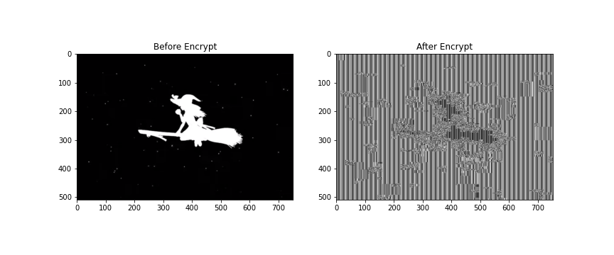

这个是现代密码学课的作业，因为还是挺好玩的而且我还把内容给忘掉了，所以说重写一遍记一下，针对 AES 不同模式的攻击还要分上好几次来写。
# AES ECB mode
众所周知，例如 AES-128 是通过 128 bit 的密钥，加密 128 bit 的明文数据生成 128 bit 的密文块。但是这并不能应用，因为明文长度并不一定是 128bit，实际的明文长度可能会有各种不同的情况。
因此，我们需要一些不同的方式来利用 AES 算法，使得 AES 能够加密任意长度的明文。其中的一种方法是 ECB（Electronic Code Book）模式，即将明文分成若干 128bit 的分组，并对各个分组采用密钥分别进行加密。即如图所示。

这种方式属于是比较简单、容易实现的，但是相应的，这种方式也有比较明显的风险。
对于相同的两段明文，很显然的，加密之后的结果，这就带来了泄漏明文消息的风险，对有较多重复内容的明文来说尤其严重，例如图像中常有的纯色色块、音频中的静音等，都会在密文中表现为重复的同样的数据块。一个潜在的攻击者对密文进行分析，即使他无法对密文进行解密，也能够分析出其中一些潜在信息。如图所示，尽管图片经过了加密，但是仍然可以看出其大致轮廓。

很明显，ECB 模式对于选择明文攻击（CPA）来说是并不安全的。
# ECB Byte-at-a-time Attack
ECB Byte-at-a-time Attack 实际上是一种选择明文攻击的手段，我们下面来说明这个攻击的原理。
首先是一些和 ECB 具体实现相关的内容。
# PKCS #7 Padding
前面我们提到了，AES 的加密块长度为 128 比特，那么对于一块实际长度不足 128 比特的明文块，我们就需要通过某种方式将其转换为长度为 128 比特。
PKCS #7 是 Cryptographic Message Syntax Standard ，其中指定了块密码的填充方式，即使用需要填充的长度 paddingSize 的 ASCII 值重复填充，如果块的长度刚好为 128 比特（16bytes），那么就填充 16 个 0x16 。
例如对于长度为 13 的消息 123456789abcd ，通过 PKCS #7 填充的结果就是 123456789abcd\x03\x03\x03 。对于长度为 16 的消息 0123456789abcdef ，填充的结果是 0123456789abcdef\x10\x10\x10...\x10 ，其中重复 16 个 \x10 。
PKCS #7 目前广泛应用在各种密码协议中，例如 OpenSSL 中默认也就使用了 PKCS #7.
而对于已经 padding 的数据，只需要检查后面 paddingSize 位是否都是 padding 的内容并将 padding 删除就可以恢复原始数据。
如果发现密文的 padding 无效，加密工具一般会抛出一个 Padding Invalid 异常。
# ECB Byte-at-a-time Attack 原理
我们假设这样的一个场景，用户输入一串数据 传给服务器。服务器在这段数据后面追加一段秘密数据，将这部分内容使用密钥 进行加密得到，传回客户端。
那么很显然，客户端没有解密密钥，自然是没有办法将这段数据解密得到 的，那么有没有办法去获取这段数据呢？
既然用户能够构造输入的，那么这里可以是一种选择明文攻击的场景，而 ECB 模式显然并不是 CPA 安全的，这里肯定是存在一种攻击方式能够破解这个加密体制。
有一个思路就是想办法去一点点地泄漏后面 的信息。来看这样的过程：
我们首先确定块密码的块长度 block_size ，接下来填充 block_size-1 的无用字符。
对于 AES 来说，我们先填充 15 个 A ，得到 AAAAAAAAAAAAAAA 。接下来，我们列举这个块的最后一个字节的内容，从 0 到 255 进行枚举： AAAAAAAAAAAAAAA\x00 ， AAAAAAAAAAAAAAA\x01 ，...， AAAAAAAAAAAAAAA\xff ，分别发送给服务器，并且得到对应的密文的第一块。这样子，我们就能够得到 256 个长度的明 - 密文对。
BLOCK 1 BLOCK 2 ---- BLOCK INDEX | |
0123456789abcdef 0123456789abcdef ---- INDEX | |
+----------------+----------------+ | |
|AAAAAAAAAAAAAAA.|secret secret se| ---- MESSAGE | |
+----------------+----------------+ |
我们截取的密文的第一块也就是我们列举的块加密之后的结果。
接下来，将前面填充的 15 个 A 发送给服务器，得到密文：
BLOCK 1 BLOCK 2 ---- BLOCK INDEX | |
0123456789abcdef 0123456789abcdef ---- INDEX | |
+----------------+----------------+ | |
|AAAAAAAAAAAAAAAs|ecret secret sec| ---- MESSAGE | |
+----------------+----------------+ | |
^ the first byte of secret |
这样子密文第一块的最后一个字节也就是秘密 secret 的第一个字节，我们将密文第一块和前面生成的明 - 密文对 进行对比，就能找到秘密 secret 的第一个字节。
同样的，继续可以破解后面的字节：
BLOCK 1 BLOCK 2 ---- BLOCK INDEX | |
0123456789abcdef 0123456789abcdef ---- INDEX | |
+----------------+----------------+ | |
|AAAAAAAAAAAAAAse|cret secret secr| ---- MESSAGE | |
+----------------+----------------+ | |
already known ^^ the second byte of secret |
以此类推，能够破解出整个 secret 。
下面是实现过程：
def byte_at_a_time_ECB_decrypt() -> str: | |
m_len, _, block_size = detect_len() | |
random_index, random_padding_size = detect_random_text_len(block_size) | |
recovered_list = [0 for i in range(block_size - 1)] | |
for i in range(m_len): | |
d = {} | |
for j in range(256): | |
m = recovered_list[i : i + block_size - 1] | |
m.append(j) | |
m = list_to_bytes(m) | |
c = target_ECB(m)[0 : block_size] # target ECB Server | |
d[c] = m | |
m = [0 for j in range(block_size - i % block_size - 1)] | |
c = target_ECB(list_to_bytes(m))[block_size * (i // block_size) : block_size * (i // block_size + 1)] | |
recovered_list.append(d[c][-1]) | |
ans = list_to_bytes(recovered_list[block_size - 1:]) | |
return ans.decode() |